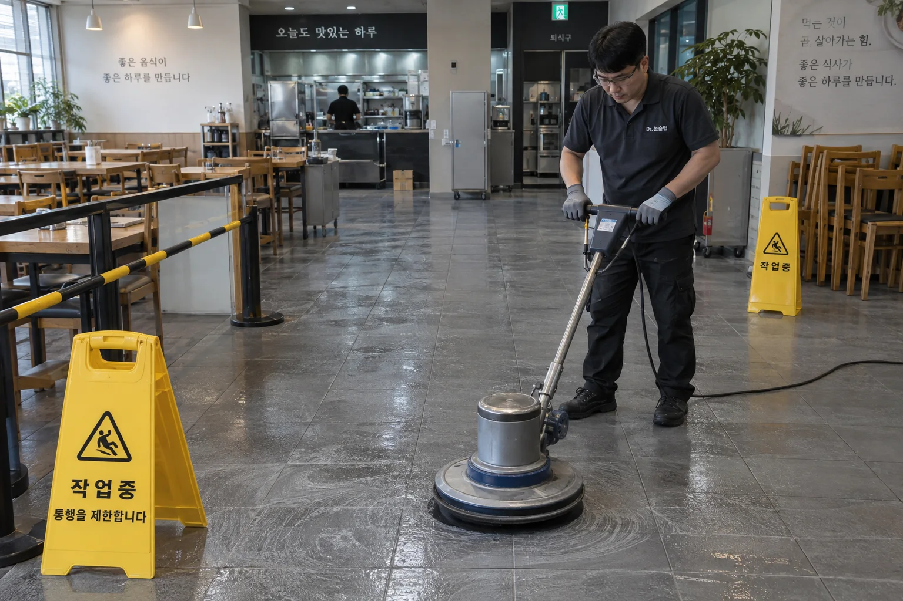
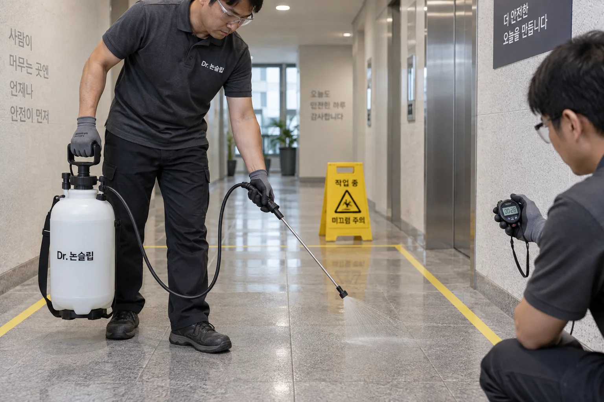
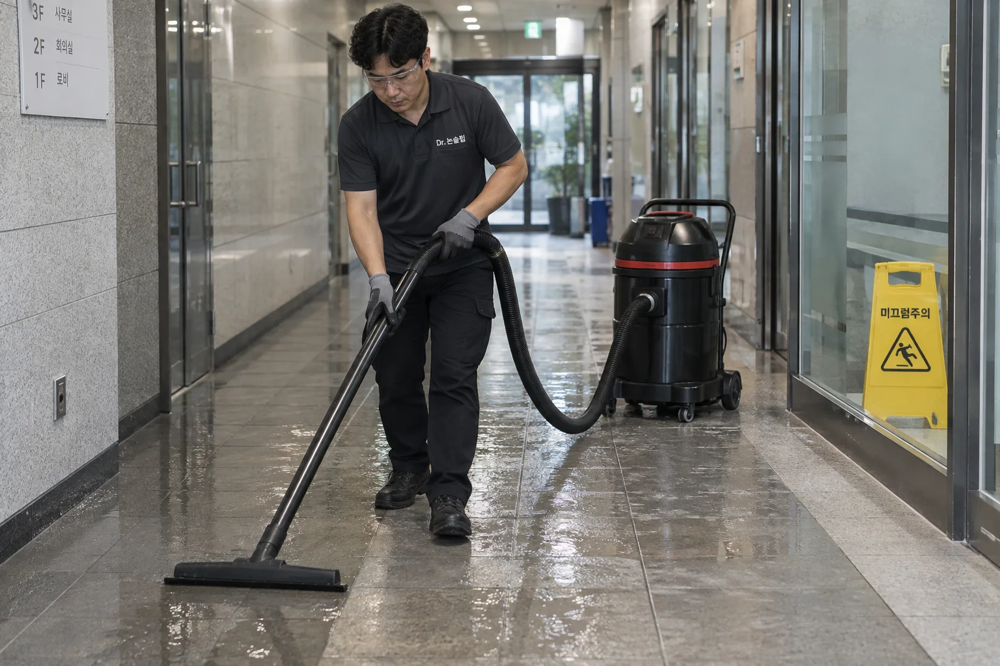

시공방법
타일·석재 표면 식각으로
젖은 바닥 미끄럼방지
기존 타일·석재에 육안으로 보기 어려운 미세 공극을 만드는 식각 시공.
코팅층을 덧씌우지 않고, 기존 표면의 미끄럼 저항을 개선합니다.
미세 공극 형성으로
젖은 표면의 접촉 개선
매끄러운 바닥의 얇은 물막은 발바닥·신발 밑창과의 접촉을 방해합니다.
전용 약제로 만든 미세 공극이 물막의 영향을 줄여,
바닥을 딛는 접촉과 마찰을 돕습니다.
바닥을 새로 덮지 않고,
기존 표면의 미끄럼 저항을 개선합니다.
철거·도막 없이
기존 바닥에 시공
- 기존 바닥 활용
- 시공에 적합한 타일·석재를 그대로 활용해 철거와 교체의 부담을 줄입니다.
- 덧씌우는 도막 없이
- 기존 표면 자체에 작용하므로 새 도막의 들뜸·벗겨짐을 관리할 필요가 없습니다.
- 오랫동안 활용
- 적절한 관리로 5년 이상의 장기 사용과 반영구적인 활용을 목표로 합니다.
바닥 세척·약제 분사·
잔여물 회수
샘플에서 정한 조건을 실제 작업 구역에 적용합니다.

1. 준비
바닥 세척·주변 보양
회전식 바닥 세척기 등 현장에 맞는 장비로 오염을 제거하고 주변 집기와 마감을 보양합니다. 약제가 작용할 표면부터 준비합니다.

2. 식각
약제 분사·반응 시간 관리
전용 분사기로 약제를 균일하게 적용하고 재질과 마감에 맞춰 반응 시간을 관리합니다. 구역과 조건에 따라 롤러 도포도 활용합니다.

3. 마무리
잔여물 세척·회수
잔여물을 정리한 뒤 미끄럼 변화와 외관을 함께 살피고 이용 시점과 청소 방법을 안내합니다.
영업 전후, 야간, 휴무일에도. 현장 여건에 맞춰 당일 작업과 이용 재개를 계획합니다. 구역을 나눌 수 있는 곳은 이용 동선과 작업 구역을 분리합니다.
적용 재질 확인·
무료 샘플 시공
타일·화강석·대리석·테라조 등 적용 가능한 재질을 살피고,
작은 샘플에서 미끄럼 변화와 색·광택을 함께 비교합니다.
재질과 기존 마감에 맞는 조건을 정한 뒤 필요한 범위만 시공합니다.
작업 사진은 시공 과정을 설명하기 위한 브랜드 이미지입니다.